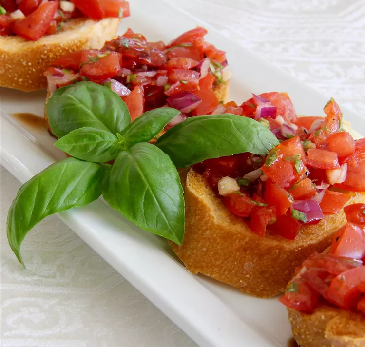

Bruschetta

Description
Bruschetta (Italian) is an Italian antipasto consisting of grilled bread often topped with olive oil and salt. Most commonly it is served with toppings of tomato, vegetables, beans, cured meat, and/or cheese. In Italy, bruschetta is often prepared using a brustolina grill.
Ingredients
- 1 ½ pounds plum tomatoes, seeded and cut into small dice
- 6 tablespoons extra-virgin olive oil, divided
- ¼ cup chopped fresh basil
- 2 tablespoons finely chopped red onion
- 2 large cloves garlic, minced
- 2 teaspoons red wine vinegar
- freshly ground black pepper to taste
- 1 French baguette, cut into 1/2-inch thick slices
- 1 tablespoon high-quality balsamic vinegar, or to taste
Steps to follow:
- Step 1: Combine tomatoes, 3 tablespoons olive oil, basil, red onion, garlic, red wine vinegar, and pepper in a bowl; let stand at room temperature for 15 minutes, then marinate in the refrigerator for 45 minutes.
- Step 2: Set oven rack about 6 inches from the heat source and preheat the oven's broiler.
- Step 3: Brush one side of Baguette slices with remaining 3 tablespoons olive oil; place, oiled-sides-up, onto a baking sheet.
- Step 4: Broil until golden brown, about 2 minutes
- Step 5: Spoon tomato mixture onto toasted Baguette slices; drizzle with balsamic vinegar. Serve immediately.